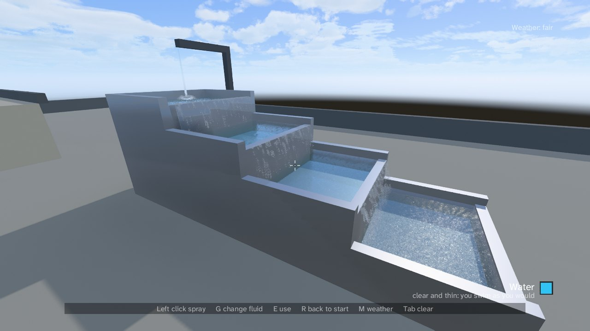
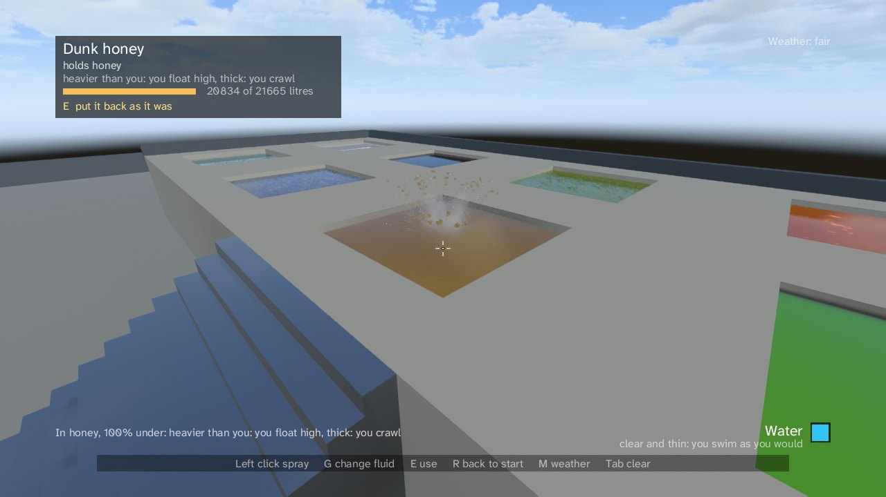
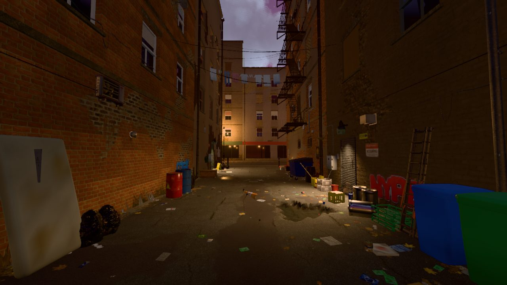
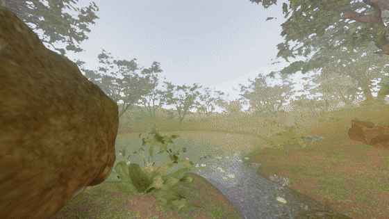
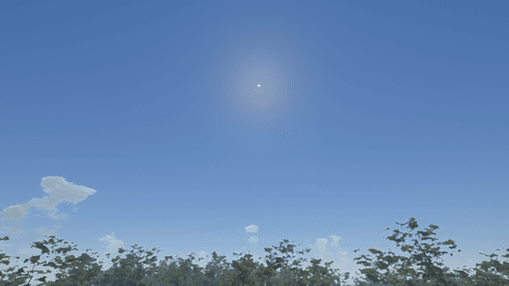
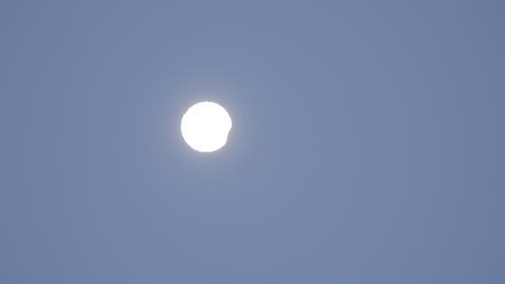
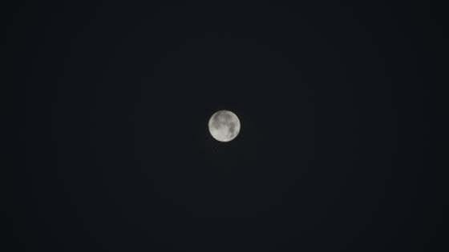
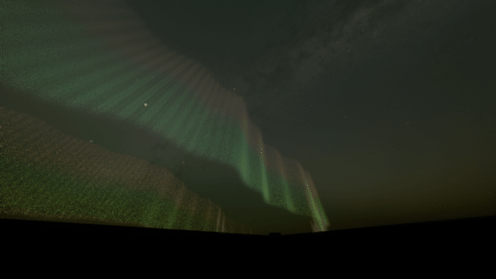
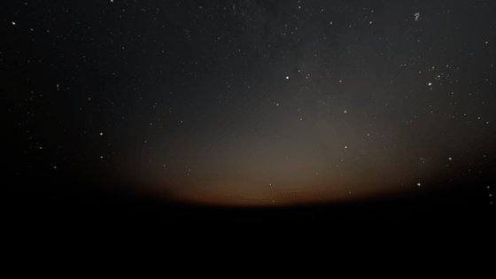

LORE
A game engine for the kind of game you get lost in: big single-player worlds, dungeons, swords, bows and magic. It's quick to pick up, fast to play, and it looks great.
Your game is just a folder
No project file, no import step, no editor you're locked into. A LORE game is a handful of text files sitting next to your level. Save one and the running game picks up the change straight away. Run lore check and it reads the whole thing without opening a window, then tells you exactly what to fix.
- Build your levels in Blender; the engine never rewrites them
- Use the code editor you already like, with autocomplete
- Plain text, so two people's changes merge cleanly
my-game/ main.luau the rules level.glb the place map.toml what goes where shaders/ how it looks sounds/ how it sounds
See it in action
LORE ships with three example games: a jungle with a creek and a lake, a city back alley, and a yard full of tanks for playing with fluids. Everything below is a straight capture from lore run. The menus, pause screen, settings, frame meter and that fluid gun? A few hundred lines of Luau.

Fluids you can script
Water is just the start. Honey, oil, tar, acid, lava and mercury are all water with a few numbers changed. They fly, splash, run down walls, pool up, and change how you move through them.

Tweak it while it's on the ground
Each slider is one property of a fluid. Drag it and every drop of that fluid in the world changes on the spot. Keyboard, mouse and gamepad all work.

Pools that fill up and spill over
Lakes, tanks and tubs hold a real amount of water. Pour more in and the level rises; once it's past the brim it spills over the lowest point and fills whatever's below. Nothing is faking this. It's just the water.

Every fluid swims differently
Float high in brine, stand on mercury, sink in light oil, crawl through honey, get stuck in tar. Jump in and the splash is made of whatever you landed in.

Real light, noon to midnight
Lamps are rated in lumens, like the bulbs you buy, and hold up properly against the sun and moon. Shadows are soft, light bounces off the street into dark corners, and a closed room stays dark at midday. Exposure adapts the way your eyes do.

Debug tools, written in script
Fly, noclip through walls, slow down time, teleport, check the frame rate. Your game binds its own keys and draws its own menus, so you can build tools like these too.
The real sky, over your world
Tell LORE where on Earth your world is and what day it is, and you get the sky that was actually there. The sun, the moon with its phases and craters, all 8,699 stars you can see with the naked eye, the planets and the Milky Way, each in the right place and at the right brightness. Eclipses and meteor showers show up on their real dates, and your script can change any of it. These clips were rendered by the engine itself.

Dusk, then stars
Sky colour comes from where the sun actually is. Night gets properly dark, and as your eyes adjust the land fades while the stars and the Milky Way come through. game.sky.setDayLength(24)

Dallas, 8 April 2024
The total eclipse, minute by minute. Daylight drops to deep twilight, the corona and planets appear, and the light on the ground dims with it. game.sky.eclipse() tells your script it's happening.

The moon crossing the sun
The moon is placed to within ten arcseconds, at its true size from where you're standing. That's why some eclipses go total and others leave a ring of fire.

A blood moon
The lunar eclipse of 8 November 2022. The moon dims, then turns copper in Earth's shadow, and the stars come out around it as its light on the land fades.

Northern lights
Green curtains with red above, circling the magnetic pole. The bigger the storm, the further south they reach: overhead in the far north, low on the horizon further down when a big one hits. game.sky.setAurora("storm")

The Perseids
Shooting stars at their real rates, with the big showers on their real nights, streaming from the right point in the sky. Your script hears about every one that's drawn. Sped up a thousand times here. game.sky.onMeteor(function(from, to, brightness, shower) end)
Scripts that read like the game
You write your game in Luau, a small, fast, typed scripting language. The idea is simple: if you've played games, you should be able to read a script and guess what it does.
- Save the file and the running game updates
- Actions like "jump" work the same on keyboard and gamepad
- Draw HUD text and bars, play sounds and build menus from the same script
- Errors show up in-game and tell you what to do next
Want the full list? See what you can do today.
-- main.luau game.onStart(function() print("Hello from Luau!") end) game.onTick(function(step) if game.input.justPressed("jump") then game.input.rumble(0.2, 0.6, 0.1) print("Jump!") end end)
What we care about
Four things, in this order. When two of them pull in different directions, the one higher up wins.
Easy
Go from install to walking around your own game in minutes. When something breaks, the error tells you how to fix it. That's the "lovely" in the name.
Fast
High, steady frame rates and low input lag on ordinary hardware. If we claim it's fast, there's a benchmark to back it up.
Focused
Single-player worlds you explore on foot. No multiplayer, no 2D, no visual scripting, nothing to learn around that you didn't come for.
Modern
Vulkan 1.3, FSR 3.1 upscaling, real-world light and first-class controller support. Pretty matters.
Under the hood
Build it from source with one Cargo command.
Rust core
Memory-safe engine code with a fixed simulation tick, so the same input always gives the same world.
Built for one player
No servers, no netcode, no matchmaking. Every part of the engine is there to serve one player in one world.
Controllers first
Every action can be bound to a gamepad, and the menus are just as happy with one as with a mouse.
Linux and Windows
Runs on both, and lore package turns your game into a Linux download in one step.